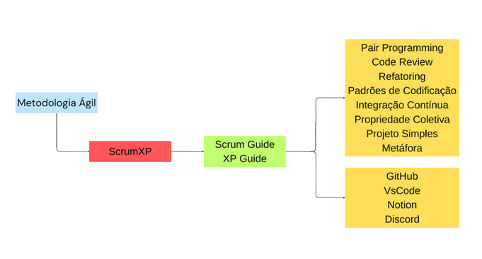

Visão do Produto e do Projeto v0.1.1
Histórico de Revisão
Versão 0.1
- Data: 02/10/2023
- Autor: Rodrigo Wendrel
- Reunião com foco em estruturar o documento e página de documentação com informações gerais do projeto.
Versão 0.1
- Data: 03/11/2023
- Autor: Rodrigo, Manoel, João Mateus
- Revisão e alinhamento de todos os documentos
1. Visão Geral do Produto
1.1 Problema
Contexto: Dependências da Faculdade do Gama - UnB Problema: Falta de espaço próprio e unificado para interação entre alunos na Faculdade do Gama (FGA), considerando que o CA não tem espaço pra quase nada, onde possam ser anunciados evento remotos ou presenciais criados por alunos, tais como jogos de cartas e tabuleiros, eventos esportivos casuais e encontros em grupo fora das dependências da faculdade. O aplicativo irá intermediar a organização de eventos entre estudantes.
1.2 Declaração de Posição do Produto
GamaHub se trata de uma aplicação web voltada para o corpo discente da Universidade de Brasília Faculdade Gama. Seu objetivo é gerar interação e inclusão entre os alunos por meio de eventos criados pelos mesmos. É uma forma fácil e simples de conhecer pessoas com interesses parecidos e assim, fazer novas relações que são necessárias e podem ser proveitosas dentro do meio acadêmico, pessoal e profissional.
Tabela 1 - Declaração de posição do produto
| Para | Estudantes do FGA |
| Necessidade | devido a falta de espaços físicos destinados para encontros para atividades de lazer |
| O | GamaHub |
| Que | Facilitar encontro de alunos do FGA para realizar atividades de lazer no FGA |
| Ao contrário | Amino |
| Nosso produto | É específico ao FGA |
1.3 Objetivos do Produto
O objetivo principal é criar um espaço para facilitar o encontro de pessoas com interesses específicos com outras de interesses similares dentro da FGA, além de ajudar a expandir a cultura e aproximar os estudantes.
1.4 Tecnologias a Serem Utilizadas
Será utilizado o método ágil ScrumXP, a stack Javascript, com NodeJS para o backend, a biblioteca React com framework NextJS, Notion e Suíte Google para organização de documentos e sprints. O ambiente de desenvolvimento será o VsCode.
2. Visão Geral do Projeto
2.1 Ciclo de Vida do Projeto de Desenvolvimento de Software
 Considerando o contexto do projeto que é de uma aplicação sem muitos riscos envolvidos, o que não pede muito detalhamento de requisitos, e que o prazo é limitado, foi definido um ciclo de vida ágil, assim como os processos do ScrumXP, visando um produto de software que agrade os usuários e aceite mudanças de requisitos. As ferramentas utilizadas na organização foram o Notion, GitHub e Discord, onde os membros podem organizar códigos, fazer reuniões e registrar o progresso das sprints.
2.2 Organização do Projeto
| Papel | Atribuições | Responsáveis | Participantes |
|---|---|---|---|
| Desenvolvedor | Codificar o produto, codificar testes unitários, realizar refatoração. | Manoel | João, Lara, Manoel, Rodrigo, Eduardo |
| Dono do Produto | Atualizar o escopo do produto, organizar o escopo das sprints, validar as entrega | Manoel | João, Lara, Manoel, Rodrigo Eduardo |
| Scrum Master | Garantir a qualidade do produto, garantir o cumprimento do conceito de pronto, realizar inspeções de código | Rodrigo | Rodrigo |
| Cliente | Estudantes da FGA | Estudantes da FGA | Estudantes da FGA |
2.3 Planejamento das Fases e/ou Iterações do Projeto
| Sprint | Produto (Entrega) | Data Início | Data Fim | Entregáveis | Responsáveis | % conclusão |
|---|---|---|---|---|---|---|
| Sprint 1 | Definição do Produto | 11/09/2023 | 02/10/2023 | (*) | Todos os membros do grupo | 10% |
| Sprint 2 | MVP e Planejamento do Projeto | 02/10/2023 | 03/11/2023 | Documentação de Visão, Escopo e Arquitetura | Todos os membros do grupo | 15% |
| Sprint 3 | Protótipo e capacitação nas tecnologias | 06/10/2023 | 12/11/2023 | Protótipo, e atividades de desenvolvimento | Todos os membros do grupo | 10% |
2.4 Matriz da Comunicação
| Descrição | Área/Envolvidos | Periodicidade | Produtos Gerados |
|---|---|---|---|
| Comunicar situação do projeto | Equipe | Diariamente | Ata de reunião básica |
| Acompanhamento das Atividades em Andamento | Equipe do Projeto Prof/Monitor |
Semanal | Ata de reunião Relatório de situação do projeto |
| Acompanhamento dos Riscos, Compromissos, Ações Pendentes, Indicadores | Equipe do Projeto | Semanal | Ata de reunião Relatório de situação |
2.5 Gerenciamento de Riscos
| Risco | Grau de Exposição | Mitigação | Plano de contigência |
|---|---|---|---|
| Diminuição da equipe trancamentos ou situações inesperadas | Baixa | Manter comunicação constante | Redistribuir tarefas e reavaliar escopo do projeto |
| Insuficiência da capacidade técnica da equipe | Médio | Pair programming com pessoas mais experientes | Pair programming |
| Perda de equipamentos e material de trabalho | Baixo | Manter cuidados de rotina | Utilizar material emprestado - biblioteca ou em pair programming |
| Má avaliação do escopo do projeto | Médio | Recorrer a monitores e ao professor para avaliação do backlog | Reavaliar requisitos rapidamente |
| Perda de contato com clientes e PO | Médio | Manter comunicação constante | Recorrer a outras pessoas que possam se encaixar no perfil de usuários |
| Falhas de comunicação entre membros da equipe | Alto | Manter comunicação constante | Buscar pessoas ausentes e auxílio na gestão de equipes |
| Dificuldade de encontrar horários comuns | Médio | Aproveitar o máximo possível os horários de aulas e pós-expediente | Flexibilizar a forma de comunicação para assíncrona e manter todos sempre cientes da situação do projeto |
| A qualidade do software não corresponder às expectativas do cliente | Médio | Verificar constantemente a validade do projeto | Buscar entender melhor as necessidades do cliente e refatorar o produto; reavaliar escopo |
| As atividades não forem concretizadas no prazo | Médio | Manter acompanhamento do trabalho e os processos do ScrumXP | Aumentar carga de trabalho; reavaliar escopo do projeto |
2.6 Critérios de Replanejamento
- Diminuição da equipe (trancamentos ou situações inesperadas);
- Má avaliação do escopo do projeto
- A qualidade do software não corresponder às expectativas do cliente
- As atividades não forem concretizadas no prazo
3. Processo de Desenvolvimento de Software
- Sprint: 1 semana
- Planejamento: no início de cada sprint
- Retrospectiva e review: ao final de cada sprint
- Daily: diariamente através de meio de comunicação que seja rápida
4. Detalhamento de Atividades do Projeto
4.1 Atividade 1
| Atividade | Método | Ferramenta | Entrega |
|---|---|---|---|
| Codificação | Pair programming | Chat por voz / VsCode / Live Coding | Função definida na sprint |
4.2 Atividade 2
| Atividade | Método | Ferramenta | Entrega |
|---|---|---|---|
| Revisão | Pair review | Chat por voz / VsCode / Live Coding | Código revisado e validado |
4.3 Atividade 3
| Atividade | Método | Ferramenta | Entrega |
|---|---|---|---|
| Documentação | (*) | Google Docs / MkDocs | Documento |
4.4 Atividade 4
| Atividade | Método | Ferramenta | Entrega |
|---|---|---|---|
| Testes | Testes de integração / Unitários | A definir | Relatório de testes |
5. Lições Aprendidas
5.1 Unidade 1
Estruturação de documentos, colaboração e organização em equipe.
5.2 Unidade 2
//
5.3 Unidade 3
//
5.4 Unidade 4
//
6. Próximos Passos
- Prototipação do produto;
- Capacitação da equipe;
- Codificação do projeto;
7. Referências Bibliográficas
//